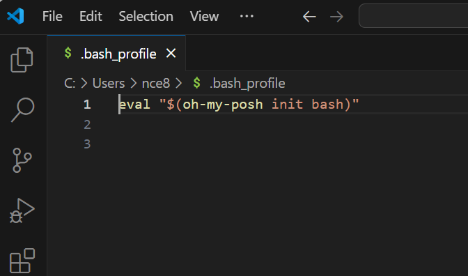
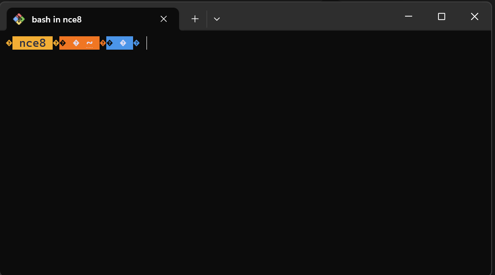
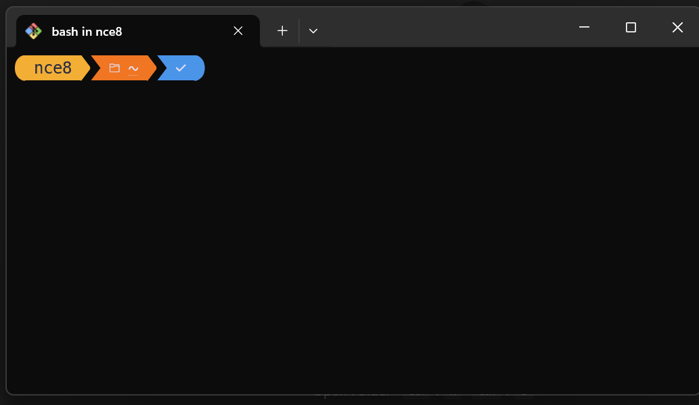

The Command Line on Windows / Installing Bash#
In our next reading on Command Line Basics, we’ll learn that there are actually several programs available that allow users to interact with their operating system via text commands instead of using their mouse to click on icons (feel free to follow the link and read ahead if you’d like).
In this course, we’ll focus on learning bash because it’s so ubiquitous in the data science space. Why? Mostly because it is the default command line tool for Linux operating systems, and while you may not know it, most of the computers you interact with on a daily basis run Linux. Your personal computer may be a Mac (which also uses bash by default) or a Windows computer, but the computers running websites, managing your email, running those ticket kiosk you see at the airport, etc. are almost all running on Linux. So when you start doing cloud computing, you’ll probably be working with a Linux virtual machine. So if you’re going to learn a command line tool as a data scientist, bash is the natural choice.
But: bash is not the default on Windows (Windows uses PowerShell and CMD by default), so on this page, I’ll show you how to set up a system that lets you work with bash on your Windows computer.
Make Sure You Have New Terminal App#
Windows recently created a new Terminal app called… Terminal. The icon looks like this:
If you don’t already have it installed, open the Windows Store, search for “Windows Terminal” and install (you can also try this link).
I would also recommend pinning it do your menu bar. You’ll use this a lot.
Install Git Bash for Windows#
To get a good bash interface in Windows, begin by downloading Git for Windows from gitforwindows.org.
Run the installer, following the directions below for each page of the installer. Note the only a couple of these are not the default choices, and they are indicated as such.
Select Components: Choose
The two “Windows Explorer Integration” options (should be selected by default)
Git LFS (Large File Storage) (should be selected by default)
Associate .git* configuration files with the default text editor (should be selected by default)
Associate .sh files to be run with Bash (should be selected by default)
(NEW!) Add a Git Bash Profile to Windows Terminal (this one is NOT selected by default)
(NEW!) Scalar (Git add-on to manage large-scale repositories) (this one is NOT selected by default)
Select Start Menu Folder: do whatever you want. I choose to not create a start menu folder.
Choosing the default editor to be used by Git: Choose “Use Visual Studio Code as Git’s default editor.” Be careful not to choose “Visual Studio Code Insiders.” (this one is NOT selected by default)
Adjusting the name of the initial branch in new repositories: Choose “Let Git decide.”
Adjusting your PATH environment: choose the recommended “Git from the command line and also from 3rd-party software.”
Choosing the SSH executable: choose “Use bundled OpenSSH.”
Configuring the line ending conversions: choose “Checkout Windows-style, commit Unix-style line endings.”
Configuring the terminal emulator to use with Git Bash: choose “Use MinTTY (the default terminal of MSYS2)”
Choose the default behavior of git pull: Choose “fast forward or merge”
Choose a credential helper: Choose “Git Credential Manager”
Configuring extra options: Choose “Enable file system caching,” don’t choose “Enable symbolic links”
Configuring experimental options: do not enable any.
Set Git Bash as Default#
Set as Windows Terminal Default#
Open Windows Terminal. If you had Windows Terminal open when running the installer, close it and re-open it.
Click on the down arrow next to the plus sign along the tab bar. You should see Git Bash as an option. But don’t click it for now — select “Settings.”
In the Startup menu of Windows Terminal, the first option is “Default Profile.” Change that to Git Bash. Click Save.
Open a new tab in Windows Terminal. It should say something like your username,
@, name of your computer, thenMINGW64 ~. Then below that, a dollar sign.
Congratulations! You’re now running bash in Windows!
Set Git Bash as VS Code Default#
Finally, we want VS Code to automatically launch git bash as well. Open VS Code and open the Command Prompt (Ctrl-Shift-P). Type and select “Terminal: Select Default Profile.”
Select Git Bash.
Close VS Code and re-open it. Type Ctrl-` (the backtick button that also has a ~ on it) to open a new terminal in VS Code. You should see MINGW64!
Create Configuration File#
When you open a sh, bash, or zsh session, that session begins by running all the code in a special file the helps configure the session. Among the things done in these files, they often define “environment variables” – variables that are visible to any program run from your command line session, with information about things like where to find various programs, like Python.
bash in particular will run a file located in the bash’s home directory (which is include your Cmder folder) called .bash_profile. We don’t need to modify this right now, but we do want to create a file there for future use.
To do this, open a new bash session, then:
run the command
cd ~: (~is a shortcut for thebashhome directory, so this makes the currentbashdirectory yourbashhome directory.)run the command
touch .bash_profile: This will create a file called.bash_profilewe can use later.
Upgrading to oh-my-posh.#
OK, so at this point you’re in pretty solid shape. As you may have noticed, though, when you open a git bash terminal it’s pretty ugly. Who needs to see MINGW64 all the time?
So I’m going to recommend upgrading your shell a little. You don’t have to do this, but I recommend it.
Install oh-my-posh. The easiest way is to follow that link and click the “Get it from Microsoft” button to install through Windows store.
Open a new terminal session in Windows Terminal. Run
oh-my-posh font install meslo.Remember that configuration file we created above? We’re gonna add some code to it. From git bash, type:
code ~/.bash_profile. That should open an empty text file in VS Code.Paste the following in that empty file:
eval "$(oh-my-posh init bash)":

Save and close. Almost there. You should now see something like this when you open a new terminal window:

Now we just need to add a font to make it pretty!
Open Windows Terminal.
Click on that down-arrow next to the
+on the tab bar.Select
Settings.Select
Git Bashunder profiles on the left.Select
Appearance.Under “Font face”, select “MesloLGL Nerd Fond Mono.”
Save.
Now when you open a new terminal, it should look like this default theme! But you can also change it up if you want to any of these!
